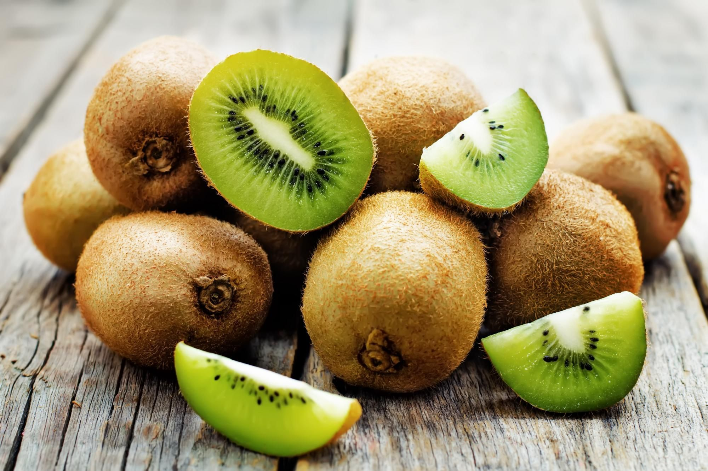
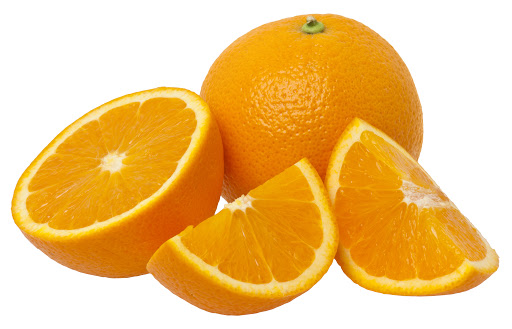
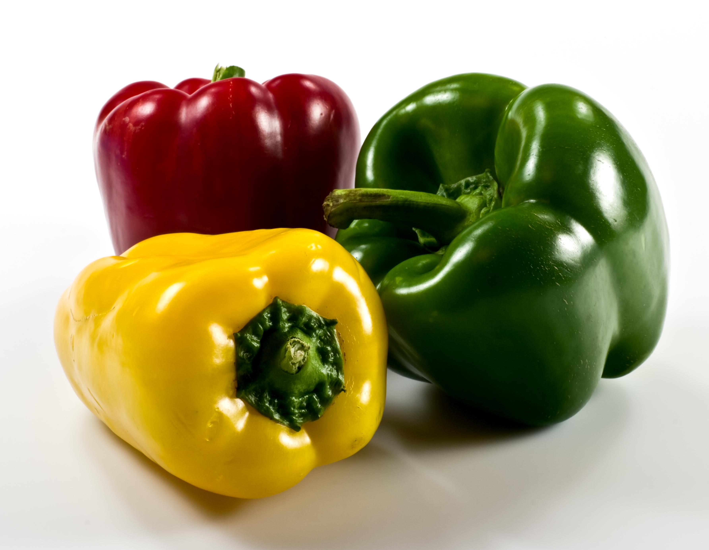
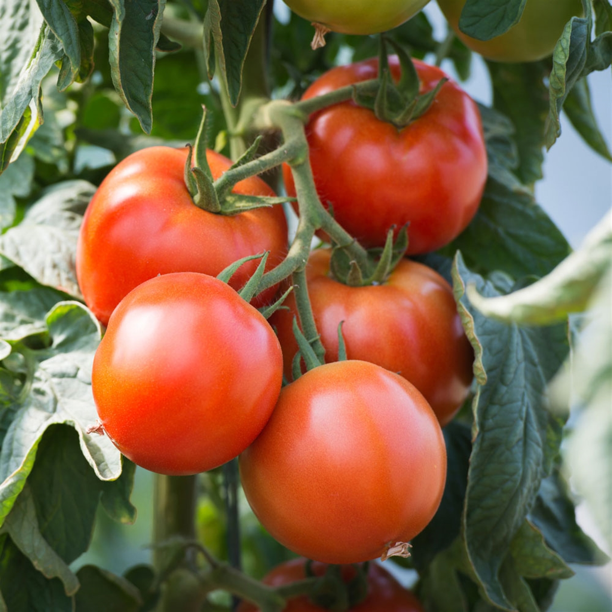

Le portofolio des légumes
Le Kiwi
Des poèmes chinois datant du premier millénaire avant Jésus Christ font mention de l’Actinidia qui est décrit comme une plante poussant en sol humide, avec de longues pousses, de beaux fruits et de belles fleurs. Dans le livre « Er Ya » (300-200 avant J.C)il est écrit que le fruit de l’Actinidia est utilisé pour lutter contre la fièvre, et sa sève comme colle dans la fabrication du papier. La plante en elle-même était une plante d’ornement donnant de tout petits fruits.
L'orange
Les premières traces de l’orange apparaissent en Chine, près de 2 200 ans avant notre ère. La culture de l’agrume progresse peu à peu vers l’ouest, d’abord chez les Sumériens, puis dans l’ancienne Égypte. Bien que des orangeraies fleurissent en Afrique du Nord aux IIe et IIIe siècles, les Arabes n’introduiront le fruit qu’aux alentours de l’an mille dans le sud de l’Europe.
Le Poivron
ppartenant à la famille des Solanacées comme les tomates, pommes de terre et aubergines, le poivron fait son apparition en Europe à partir du XVIème siècle. Poivrons et piments sont issus du même arbuste. Dans un premier temps, c’est surtout le piment qui s’est répandu en France et un peu plus tard le poivron vers la fin du XVIIIème siècle.
La Tomate
La tomate vient de l'Amérique du Sud, avec des formes sauvages rencontrées au Pérou et en Equateur mais elle a été cultivée pour la première fois au Mexique par les Aztèques qui l'appelaient "tomalt". L'Europe ne l'a connue que vers le XVIe siècle lorsque les espagnols et les portugais l'ont ramenée après leur découverte de l'Amérique. Les italiens l'ont appelée "pomodoro" qui se traduit par "pomme d'or" et en font surtout de la sauce. De l'Italie, elle gagne la Provence et conquiert petit à petit la France qui ne l'utilisait que de façon ornementale, craignant sa toxicité.
C'est fait en 10 minutes et c'est mieux que leur truc